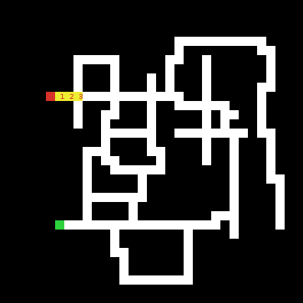
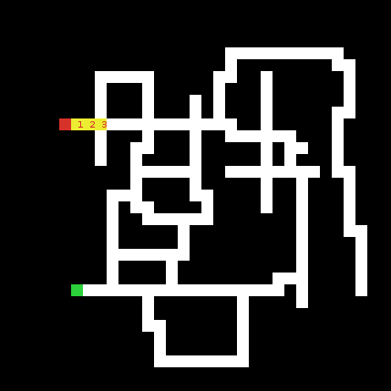
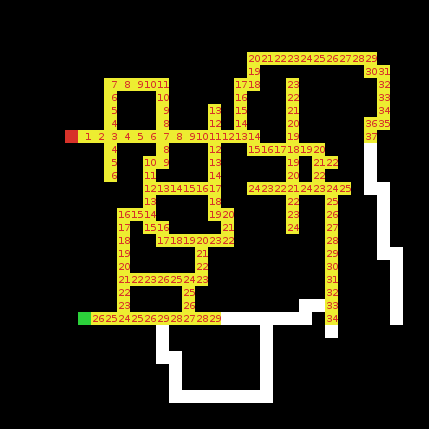

Cellular Automata for Pathfinding in NetLogo

Last time we took a look at implementing a Cellular Automaton in NetLogo to do some simple image manipulation. We just scratched the surface. In class, the kids write pretty nice Photoshop Light applications.
Today we'll look at some more ambitious problem solving - using a Cellular Automaton to find a path through a maze.
Part 1 - finding possible paths
We'll use the image above as an example and a live model with all the code is at the end of this post.
Each square of the maze is a NetLogo patch. White square represent possible paths, Red is our entrance, green our exit. As we explore the maze, we'll color the cells yellow.
Remember, in a Cellular Automaton (CA), each cell makes a decision as to it's next state based on information about its neighbors (up, down, left, and right only in this case).
So, if every cell is looking around at it's neighbors, most cells don't have enough information. The only white cell that might be on the path from entrance to exit is the one next to the entrance - it might be on the path.
This leads us to the first step of our CA rule set:
; if I have a green neighbor, I might be on the path, turn yellow ask patches with [pcolor = white] [ if any? neighbors with [pcolor = red] [ set pcolor yellow ] ]
(click images to enlarge)

Next time through, we notice that a cell might be on the path if it's white and it has either red or yellow neighbors.
 


Eventually, we end up with a yellow abutting green - the exit.
Notice that each yellow cell is also numbered. The number indicates how many steps it took to get there from the entrance. The implementation is trivial:
- Start by giving each patch a variable step and starting it at 0.
- When a cell is about to turn yellow, it should look at it's yellow or red neighbors, ask for their step value (they'll all be the same - think about why), and set it's step value to one more than that.
We'll use these step numbers to recover the actual shortest path.
Part 2 - recovering the shortest path.
We can now use the yellow patches with the step numbers to find our way back.
We're going to build a solution set.
- start with an empty solution set.
- take the only green cell not in the solution set (let's call it G).
- Ask G's yellow neighbor with lowest step number to turn itself green (that cell will be G next time around).
- Place G into the solution set (leaving the new green cell as the only green cell not in the solution set).
- Repeat 2 - 5 until we're back at the entrance.
This is one of my favorite intro topics. It's using a CA - something normally just presented as a toy idea, to solve a real problem. It reinforces parallel processing and foreshadows all sorts of pathfinding ideas to come.
Below is the complete NetLogo program. You can look at the code by clicking on the code tab at the bottom.
To run:
- setup sets up all the variables and clears the world.
- buildmaze builds a random maze.
- solve is a toggle to run through an entire solution.
- step single steps through the CA.
- reset Resets all the variables and recolors the maze to unsolved.
- The other buttons are toggles for drawing your own maze.